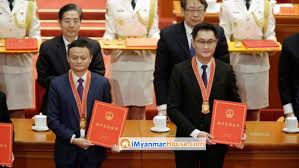

Early Life and Education
Ma was born in Hangzhou, Zhejiang, on 10 September 1964, as Ma Yun.[17] He became interested in learning the English language as a young boy and began practicing it with English-speaking visitors who frequented the Hangzhou International Hotel. At the age of 12, Ma bought a pocket radio and began listening to English radio stations frequently. For nine years, Ma rode 27 km (17 miles) on his bicycle every day to work as a tour guide of Hangzhou for foreigners in order to practice his English. He became pen pals with one of those foreigners, who nicknamed him "Jack" because he found it hard to pronounce his Chinese name.[18] When Ma was 13 years old, he was forced to transfer to Hangzhou No. 8 Middle School as he kept getting in fights. In his primary school days, Ma struggled scholastically, and it took two years for him to gain acceptance at an ordinary Chinese high school, as he only got 31 points in mathematics on the Chinese high school entrance exam.
Career

Early career
According to Ma's autobiographical speech,[25] after graduating from Hangzhou Normal University in 1988, Ma applied for 31 different odd entry-level jobs and was rejected for every single one. "I went for a job with the KFC; they said, 'you're no good'", Ma told interviewer Charlie Rose. "I even went to KFC when it came to my city. Twenty-four people went for the job. Twenty-three were accepted. I was the only guy [rejected] ...".[23][26] During this period, China was nearing the end of its first decade following Deng Xiaoping's economic reforms.